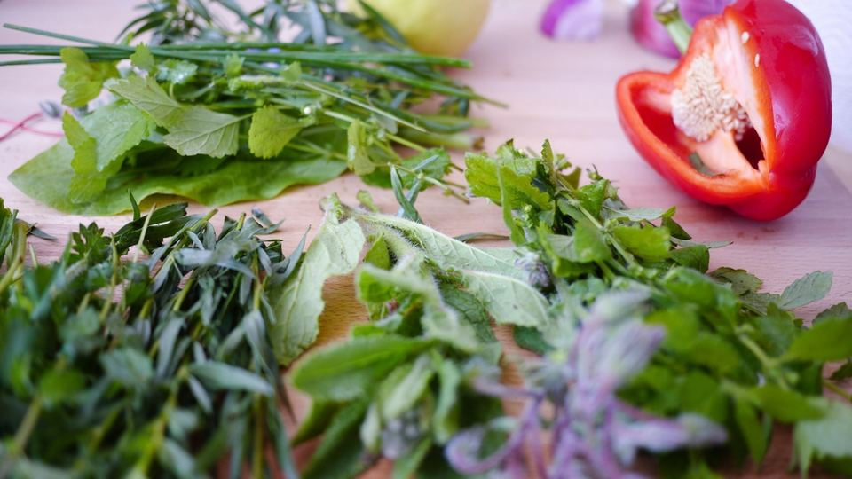

仕事や家のことを終えて台所に立つと、「今日は何を作ろう」と考えるところから一日の疲れが重くのしかかってきます。料理そのものより、献立を決めることや段取りを組むことに時間がかかっている、と感じる方も多いのではないでしょうか。
この記事では、平日の夕食を15分前後で整えるための「献立の決め方」と「調理の順番」を中心にまとめました。特別な料理の腕前は必要ありません。考える手間を減らす仕組みを、今日から少しずつ取り入れてみてください。
平日15分の献立で楽になる理由｜最初に全体像
平日の夕食づくりに時間がかかる原因は、包丁を握る時間よりも「考える時間」と「段取りの迷い」にあることが多いです。飲食店の厨房では、営業前に仕込みをまとめて済ませ、注文が入ったら決まった順番で仕上げるという考え方で、限られた時間の中で何品も出しています。
家庭でも「献立を型で決める」「下ごしらえを先に済ませる」「火を使う順番を固定する」の3つをそろえると、平日の調理は短くしやすくなります。
- 帰宅が遅い日が多い方：当日は仕上げだけにできるので、食卓に出すまでの時間が読みやすくなります
- 献立を考えるのが負担な方：組み合わせの型があると、毎日ゼロから考えずに済みます
- 料理に自信がない方：手順が決まっているので、迷う場面が減ります
- 家族で料理を分担したい方：型と下ごしらえがあれば、誰が作っても同じように回しやすくなります
平日15分の献立のやり方｜ステップで解説

ステップ1：献立を「型」で決める
毎日ゼロから献立を考えると、それだけで時間と気力を使います。そこで、主菜・副菜・汁物の組み合わせを「調理法」で決めておくのがおすすめです。
- 主菜は「焼く」か「炒める」：フライパン1つで仕上がり、洗い物も少なくて済みます
- 副菜は「和える」か「レンジ」：火を使わないので、主菜と同時に進められます
- 汁物は「具を入れて煮るだけ」：下ごしらえ済みの野菜を入れれば、数分で一品になります
曜日ごとに「月曜は鶏肉、火曜は豚肉、水曜は魚」のように主菜の食材を決めておく方法もあります。迷う場面をひとつずつ減らすことが、時短のいちばんの近道です。
ステップ2：週末に下ごしらえをまとめて済ませる
週末や時間のある日に、30分から1時間ほどを目安に下ごしらえをしておきます。全部を作り置きにする必要はなく、「切る」「下味をつける」までで十分役に立ちます。
- 肉の下味：一回分ずつ保存袋に入れ、しょうゆやみそなどの調味料をもみ込んで冷凍します
- 野菜のカット：玉ねぎ・にんじん・きのこなどを切って保存容器に分けておきます
- 副菜のもと：ゆでた青菜や、塩もみした野菜を用意しておくと、和えるだけで一品になります
冷蔵で保存する下ごしらえ済みの食材は、2〜3日以内に使い切るのが目安です。それより後の分は冷凍にしておくと、平日の後半も安心して使えます。
ステップ3：当日は「火を使う順番」を固定する
当日の調理は、毎回同じ順番で進めると迷いがなくなります。目安としては次の流れです。
- 汁物の鍋を火にかける（湯を沸かしながら具を入れる）
- 主菜をフライパンで焼く・炒める
- 主菜に火が通るのを待つ間に、副菜を和える
- 汁物に味をつけて、盛りつける
ごはんは朝のうちに炊飯器の予約をしておくか、冷凍ごはんを温めると、当日の手間がさらに減ります。
ポイント
調理を始める前に、使う食材と調味料をすべて作業台に出しておくと、途中で冷蔵庫を何度も開ける時間がなくなります。厨房で「段取り八分」と言われるように、最初の準備が仕上がりの早さを左右します。
具体例｜共働き家庭の水曜日の夕食の場合
週末に、鶏もも肉をひと口大に切ってしょうゆ・みりん・しょうがで下味をつけ、冷凍しておいたとします。前日の夜に冷蔵庫へ移して解凍しておき、ほかに切ったキャベツとにんじん、ゆでたほうれん草も用意してあるとします。
- 汁物：鍋に湯を沸かし、キャベツとにんじんを入れて数分煮て、みそを溶きます
- 主菜：フライパンに油をひき、下味つきの鶏肉を中火で焼きます。両面に焼き色をつけたらふたをして、中までしっかり火を通します
- 副菜：ほうれん草の水気をしぼり、しょうゆとかつお節で和えます
鶏肉を焼いている間に副菜と汁物を仕上げられるので、慣れてくると15分前後で3品がそろいやすくなります。鶏肉は中心までしっかり火が通っているか、切り口の色を確かめてから盛りつけましょう。
つまずきやすい点と注意点
注意
- 作り置きの冷まし方：加熱したおかずは、粗熱をとってから冷蔵庫に入れます。浅めの容器に広げると早く冷め、菌が増えやすい温度の時間を短くできます
- 保存期間の目安：冷蔵の作り置きは2〜3日、冷凍は2〜3週間ほどを目安にし、容器に作った日付を書いておくと迷いません
- 再加熱：作り置きを食べるときは、中心まで温かくなるまでしっかり再加熱します。電子レンジの場合は途中で一度混ぜると、温めむらが減ります
- 下ごしらえのしすぎ：一度にたくさん準備すると、使い切れずに傷ませてしまうことがあります。最初は3日分ほどから始めるのがおすすめです
注意
生の肉や魚を切った包丁やまな板は、野菜や加熱しない副菜に使う前に洗剤でよく洗いましょう。下ごしらえの段階で、生ものと加熱しない食材を分けておくと安心です。
もっと楽にしたいときの道具・サービス
段取りを整えても、どうしても台所に立てない日はあります。そんな日のために、頼れる道具やサービスを用意しておくと、気持ちにもゆとりが生まれます。
- 調理家電：電気圧力鍋や自動調理鍋は、材料を入れておけば火加減を見ていなくても煮込み料理が仕上がります。台所を離れていられる時間ができるのが良さです
- ミールキット：カット済みの食材とたれがセットで届くので、献立を考える手間と下ごしらえをまとめて減らせます。週に数回だけ取り入れる使い方もあります
- 冷凍の宅配食：温めるだけで一食が整うので、作る余裕がまったくない日の備えになります
選ぶときは、「平日の何曜日に使うか」「冷蔵庫・冷凍庫に置き場所があるか」「家族の人数や好みに合うか」の3つを考えると、無理なく続けやすくなります。料金や内容はサービスごとに異なるため、詳しくは公式サイトでご確認ください。
おすすめサービス比較表
| サービス | タイプ（冷凍・冷蔵・キット） | 特徴 | 申込み |
|---|---|---|---|
| イチオシKit Oisix | ミールキット | 主菜・副菜の2品が20分で作れる献立キット | 料金を見る |
| 2食材宅配のヨシケイ | ミールキット | 栄養士の献立・7コースから選べるミールキット | 料金を見る |
| 3わんまいる | 公式サイトで確認 | 旬の手作りおかず・ポイントプログラムあり | 料金を見る |
※料金・内容は各社の公式情報・広告素材の記載をもとにした目安です（2026年10月時点）。最新の料金・条件は必ず公式サイトでご確認ください。
この記事に関連する商品（楽天市場）
 VAKUEN 真空保存容器 電動 強力密閉 鮮度長持ち コンテナ タッパー キャニスター BPA…KitcheNavi楽天市場店楽天市場で価格を見る
VAKUEN 真空保存容器 電動 強力密閉 鮮度長持ち コンテナ タッパー キャニスター BPA…KitcheNavi楽天市場店楽天市場で価格を見る デジタルタイマー キッチンタイマー マグネット デジタル おしゃれ アラーム タイマー ダイヤル…霜山楽天市場店楽天市場で価格を見る
デジタルタイマー キッチンタイマー マグネット デジタル おしゃれ アラーム タイマー ダイヤル…霜山楽天市場店楽天市場で価格を見る じけいえんごはん 特別養護老人ホーム監修 介護食参考書 時短レシピ 本 レシピ本 介護食 参考書…北海道芦別市楽天市場で価格を見る
じけいえんごはん 特別養護老人ホーム監修 介護食参考書 時短レシピ 本 レシピ本 介護食 参考書…北海道芦別市楽天市場で価格を見る
※価格・在庫・送料は変わることがあります。購入前に楽天市場の商品ページでご確認ください。
よくある質問
15分で作れないときは、手際が悪いということですか？
そんなことはありません。15分はあくまで目安で、台所の広さやコンロの数、家族の人数によって変わります。慣れるまでは時間がかかって当然なので、少しずつ短くなれば十分です。
下ごしらえの時間が週末に取れません。
前日の夜に、翌日の分だけ野菜を切っておくだけでも効果があります。カット野菜や冷凍野菜を使って、下ごしらえそのものを減らす方法もあります。
冷凍した下味つきの肉は、どう解凍すればよいですか？
前日の夜に冷蔵庫へ移して、ゆっくり解凍するのが安心です。常温に長く置いておくのは避けましょう。急ぐときは電子レンジの解凍機能を使い、そのまま調理してください。
献立がいつも同じになって飽きてしまいます。
調理法の型はそのままにして、味つけだけを変えるのがおすすめです。同じ焼く料理でも、しょうゆ味・みそ味・塩レモンなどに変えると、食卓の印象が変わります。
まとめ
この記事のポイント
- 平日の時短は、献立を「調理法の型」で決めて、考える時間を減らすところから始まる
- 週末に「切る・下味をつける」まで済ませておき、当日は火を使う順番を固定すると迷いが減る
- 作り置きは冷ましてから保存し、保存期間の目安を守って、食べる前に中心までしっかり再加熱する
まずは今週、主菜を「焼く」、副菜を「和える」と決めて、一日だけ試してみてください。うまくいったら、少しずつ型を増やしていけば大丈夫です。
この記事の要点を、別の切り口で短くまとめたものを note にも載せています。